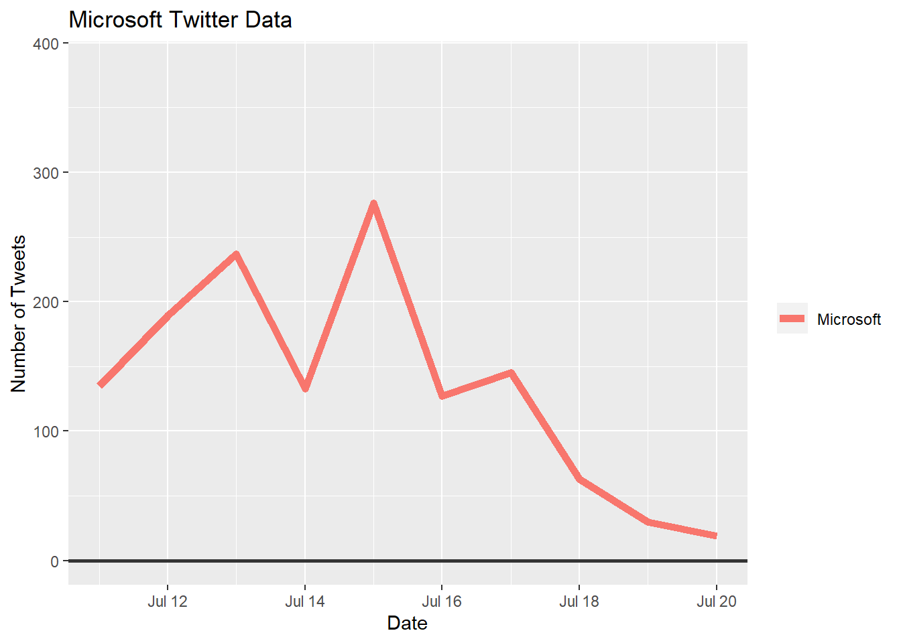
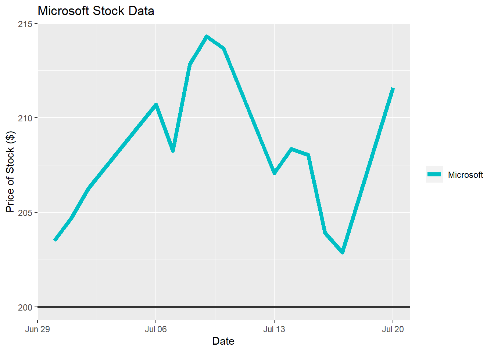
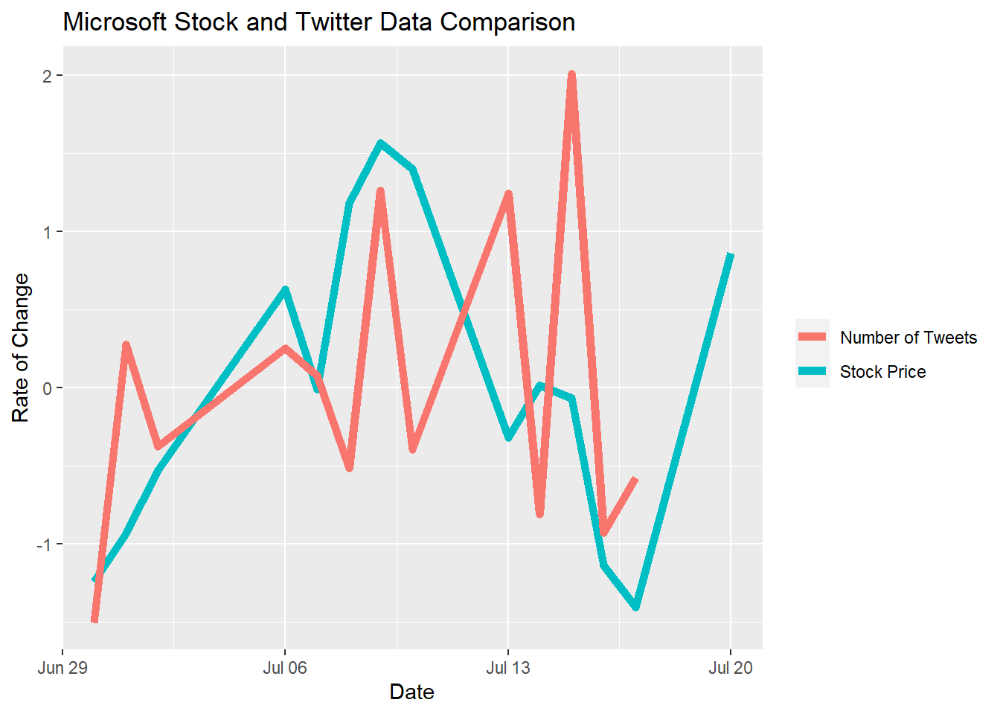

7 Microsoft Data
7.1 Microsoft Data Visualization
We have included plots for Microsoft’s Twitter engagement, stock price, and a comparison of the two against one another. The first plot shows the change in engagement through the Twitter handle “@MicrosoftHelps”. The second plot shows the change in the stock price over the course of the three weeks we collected data. Both of the plots are very consistent and show comparably congruent patterns. The third plot compares the two based on their respective rates of change. When looking at this plot, it’s evident that you can see a clear pattern between Twitter activity and stock data.
ggplot(filter(new_all_data, CompanyName=="Microsoft"), aes(x = New_Date,y= Company_Date)) +
geom_line(aes( color= CompanyName), lty = 1, size = 2) +
geom_hline(yintercept = 0, size = 1, color="#333333") +
xlim(x= c(Sys.Date()-23, NA))+
theme(legend.title=element_blank())+
labs(title="Microsoft Twitter Data", x= "Date", y= "Number of Tweets")
ggplot(filter(companystock, Company=="Microsoft"), aes(x = StockDate,y= Price)) +
geom_line(aes( color= Company), lty = 1, size = 2) +
geom_hline(yintercept = 200, size = 1, color="#333333") +
scale_colour_manual(values = c(Microsoft="#00BFC4"))+
theme(legend.title=element_blank())+
labs(title="Microsoft Stock Data", x= "Date", y= "Price of Stock ($)")
ggplot(filter(companystock, Company=="Microsoft"))+
geom_line(aes(x= StockDate, y= scale(Price), color = "Stock Price"), lty = 1, size = 2)+
geom_line(aes(x= StockDate, y= scale(Tweets), color = "Number of Tweets"), lty = 1, size = 2)+
theme(legend.title=element_blank())+
labs(title="Microsoft Stock and Twitter Data Comparison", y= "Rate of Change", x= "Date")
7.2 Conclusion
Microsoft’s Twitter and stock data both acted very regularly during the majority of our data collection period. The price of the stock never varied by more than $15 and the Twitter data was visibly steady for the middle two weeks of the data collection. The only visible volatility is shown at the beginning and end of the Twitter data plot. Even though there existed individual days of variance, the last plot which compares the Twitter and stock data, based on the rate of change, shows a direct similarity. Seen are the same peaks and dips between the two datasets, in turn supporting our hypothesis.